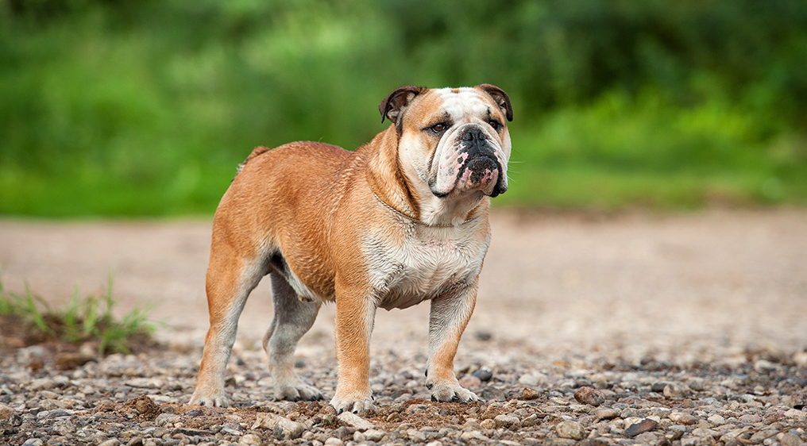

| דף ראשי | גזעים | מחלות | רקעים ותמונות | סקר | צרו קשר |
|---|
| קוקר ספאנייל |
| סמוייד |
| שפיץ יפני |
| פומרניאן |
| פודל |
| דני ענק |
| דלמטי |
| רועה גרמני |
| רועה קווקזי |
| רועה בלגי |
| בולדוג אמריקאי |
| בולדוג צרפתי |
| בולדוג אנגלי |
| צ'או צ'או |
| שיצ'ו |
| אמסטף |
| פינצ'ר |
| רוטווילר |
| דוברמן |
| האסקי סיבירי |
בולדוג אנגלי
מידע כללי
למרות מראהו המאיים, הבולדוג האנגלי הינו אחד הכלבים העדינים והאדיבים מבין הגזעי. ידידותי ועדין באופן כללי ובמיוחד עם ילדים ועדיין מספיק אמיץ ולוחמני בשביל להבריח פורצים ולהוות כלב שמירה מצוין. כלב מלא אנרגיה ומרץ, עיקש ולא מוותר בקלות על כל טיפת תשומת לב שהוא יכול לקבל מבעליו.
בולדוג אנגלי - מקור הגזע והיסטוריה
למרות שגזע זה הוא צאצא של המסטיף האסיאתי העתיק, פיתוחו של הבולדוג בוצע לגמרי בבריטניה. הבולדוג (כלב שור) נקרא כך לא רק עקב מראהו הרחב המזכיר מראה של שור ועקשנותו, אלא גם כיוון שבמאה ה-17 היה נהוג להכניס את הבולדוג יחד עם שור רתום לתוך זירה ולהמר על יכולתו של הבולדוג להרוג את השור. "משחק" זה הוצא אל מחוץ לחוק יותר מאוחר במאה ה-19.
בולדוג אנגלי - נתונים ומאפיינים
כלב מלא חיבה ועדין עם ילדים ועם זאת, הבולדוג הינו בעל מראה מאיים וכלב שמירה נהדר כאשר מעט מאד פולשים יסתכנו במגע עם כלב זה. הבולדוג עקשן מאד והוא נחשב לכלב המחפש באופן כמעט תמידי את תשומת הלב של בעליו ואוהב כל רגע כזה. הבולדוג האנגלי יציית לבעליו כל עוד הוא יראה שהבעלים הוא המנהיג, על כן יש צורך שבעלי הכלב יבין התנהגות כלבי אלפא. הבולדוג נמוך, רחב וקומפקטי, לסתו התחתונה בולטת יותר מהעליונה והליכתו מעט מתנודדת. גובהו של הבולדוג האנגלי נע בין- 31 ל- 40 ס"מ ומשקלו מגיע לממוצע של כ-25 ק"ג (נקבה- 23).
מחלות נפוצות וטיפול - כלב בולדוג אנגלי
הרבה מכלבי הבולדוג סובלים מבעיות נשימה עקב קנה נשימה צר יחסית. בעיות ראייה, כוויות וכוויות קור גם כן נפוצות בגזע זה כיוון שעורם של הכלבים רגיש לאקלים קיצוני ואף לחדרים חמים ומכוניות. גורים, לעתים נפוצות, מולדים על ידי ניתוח קיסרי עקב ראשם הרחב. הבולדוג נוחר ומרייר והקיבה שלו פעילה מאד, כך שאולי זהו נושא שיפריע לבעלי חוש ריח רגיש. בעיות ירכיים ועור גם כן נפוצות.תוחלת החיים הממוצעת של הבולדוג הינה שמונה שנים.
